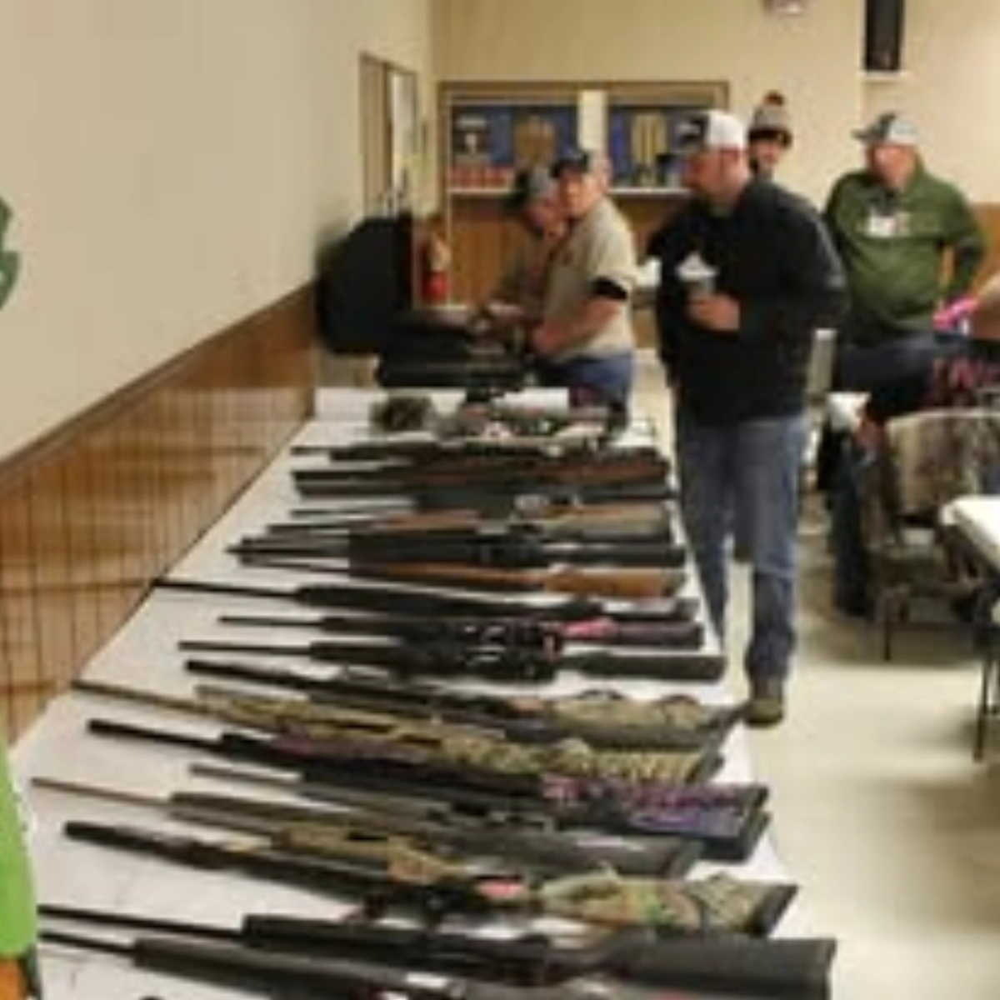

⭐ FEATURED EVENTAnnual Sportsmen Banquet
📅 EVERY MARCH | Annual Marquee Gathering
Our flagship annual celebration! The Sportsmen Banquet is our biggest community event of the year, featuring a full dinner, social gathering, and a massive raffle with dozens of premium firearms, sporting gear, and door prizes.
Tickets sell out early every year—contact a board member for ticket availability!